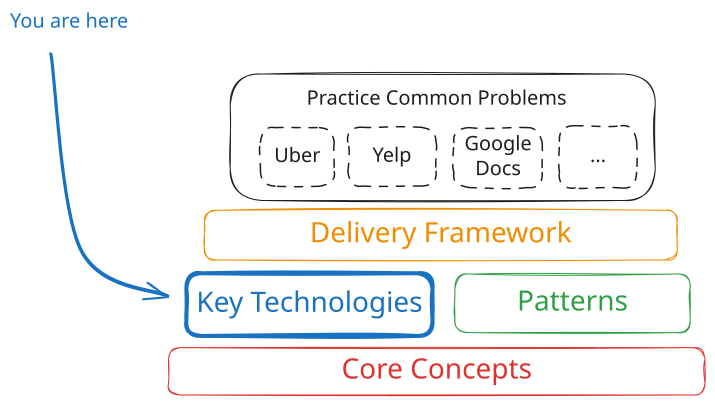
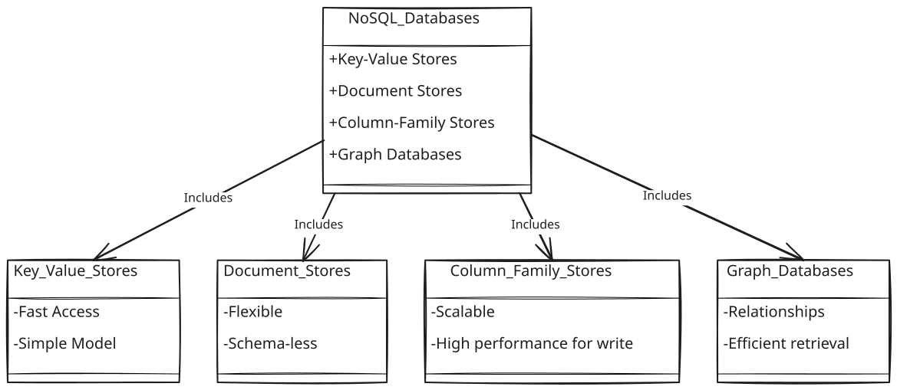
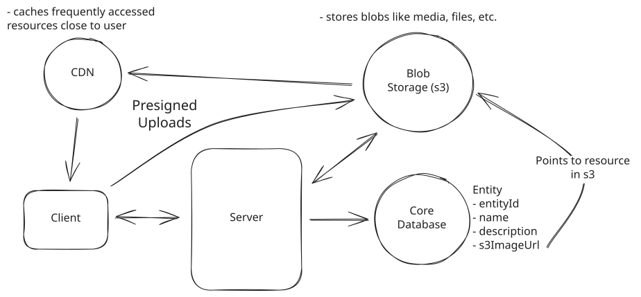
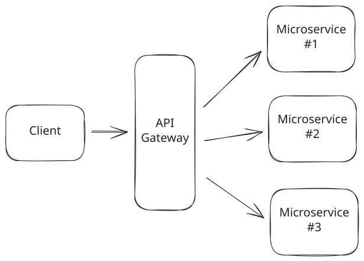
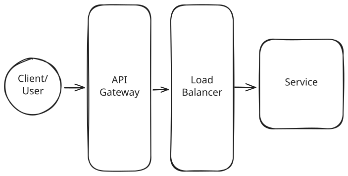
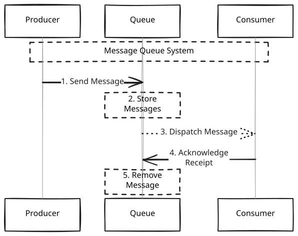

System Design in a Hurry
Key Technologies
The key technologies you need to know for system design interviews, built by FAANG managers and staff engineers.
System design involves assembling the most effective building blocks to solve a problem, so it's crucial to have a good understanding of the most commonly used building blocks. Most interviewers aren't going to care whether you know about a particular (e.g.) queueing solution so long as you have one you can use. However, if you don't know about any queueing solutions, you're going to have a hard time designing a system that requires one!
This brings us to our key technologies:

Overall Structure
In this section, we're going to walk through the key categories of technologies relevant to solving 90% of system design problems, together with some discussion of the possible options for each. You're generally free to choose which technology you want to use in each category, but we recommend you have at least one.
Keep in mind that the amount of depth your interviewer is likely to probe is proportional to the level you're interviewing at. A mid-level candidate who can roughly describe ElasticSearch as a search index is likely to be fine, but a senior candidate who can't describe the inverted index or reason about its scaling is likely to be a yellow flag. In either case, focus on breadth before depth!
Core Database
Almost all system design problems will require you to store some data and you're most likely going to be storing it in a database (or Blob Storage). While there are many different types of databases, the most common are relational databases (e.g. Postgres) and NoSQL databases (e.g. DynamoDB) - we recommend you pick one of these for your interview. If you are taking predominantly product design interviews, we recommend you pick a relational database. If you are taking predominantly infrastructure design interviews, we recommend you pick a NoSQL database.
Many candidates trip themselves up by trying to insert a comparison of relational and NoSQL databases into their answer. The reality is that these two technologies are highly overlapping and broad statements like "I need to use a relational database because I have relationships in my data" (NoSQL databases can work great for this) or "I've gotta use NoSQL because I need scale and performance" (relational databases, used correctly, perform and scale incredibly well) are often yellow flags that reveal inexperience.
Here's the truth: most interviewers don't need an explicit comparison of SQL and NoSQL databases in your session and it's a pothole you should completely avoid. Instead, talk about what you know about the database you're using and how it will help you solve the problem at hand. If you're asked to compare, focus on the differences in the databases you're familiar with and how they would impact your design. So "I'm using Postgres here because its ACID properties will allow me to maintain data integrity" is a great opener.
Relational Databases
What is a relational database and when should you use it?
Relational databases (sometimes called RDBMS or Relational Database Management Systems) are the most common type of database. They're often used for transactional data (e.g. user records, order records, etc) and are typically the default choice for a product design interview. Relational databases store your data in tables, which are composed of rows and columns. Each row represents a single record, and each column represents a single field on that record. For example, a users table might have a name column and an email column. Relational databases are often queried using SQL, a declarative language for querying data.
Learning how RDBMS's work under the covers is beyond the scope of this guide, but we recommend you read A Deep Dive into How Databases Work if you're interested in learning more. Understanding how data flows internally through a database is a microcosm of the tricks you can use in your system design interview to optimize for performance and scale.
Things you should know about relational databases
Beyond simply storing data, relational databases come equipped with several features which are useful for system design interviews. The most important of these are:
- SQL Joins: Joins are a way of combining data from multiple tables. For example, if you have a users table and a posts table, you might want to query for all posts by a particular user. This is important for querying data and SQL databases can support arbitrary joins between tables. Note that joins can be also be a major performance bottleneck in your system so minimize them where possible.
- Indexes: Indexes are a way of storing data in a way that makes it faster to query. For example, if you have a users table with a name column, you might create an index on the name column. This would allow you to query for users by name much faster than if you didn't have an index. Indexes are often implemented using a B-Tree or a Hash Table. The great thing about relational databases is (a) their support for arbitrarily many indexes, which allows you to optimize for different queries and (b) their support for multi-column and specialized indexes (e.g. geospatial indexes, full-text indexes).
- RDBMS Transactions: Transactions are a way of grouping multiple operations together into a single atomic operation. For example, if you have a users table and a posts table, you might want to create a new user and a new post for that user at the same time. If you do this in a transaction, either both operations will succeed or both will fail. This ensures you don't have invalid data like a post from a user who doesn't exist!
What are the most common relational databases?
The most common relational databases are Postgres and MySQL. If you don't already have a favorite, we recommend you pick Postgres and we have a great deep-dive to help you with the details, but either one is fine.
NoSQL Databases
What is a NoSQL database and when should you use it?
NoSQL databases are a broad category of databases designed to accommodate a wide range of data models, including key-value, document, column-family, and graph formats. Unlike relational databases, NoSQL databases do not use a traditional table-based structure and are often schema-less. This flexibility allows NoSQL databases to handle large volumes of unstructured, semi-structured, or structured data, and to scale horizontally with ease.

NoSQL Databases
NoSQL databases are strong candidates for situations where:
Flexible Data Models: Your data model is evolving or you need to store different types of data structures without a fixed schema.
Scalability: Your application needs to scale horizontally (across many servers) to accommodate large amounts of data or high user loads.
Handling Big Data and Real-Time Web Apps: You have applications dealing with large volumes of data, especially unstructured data, or applications requiring real-time data processing and analytics.
The places where NoSQL databases excel are not necessarily places where relational databases fail (and vice-versa). For example, while NoSQL databases are great for handling unstructured data, relational databases can also have JSON columns with flexible schemas. While NoSQL databases are great for scaling horizontally, relational databases can also scale horizontally with the right architecture. When you're discussing NoSQL databases in your system design interview, make sure you're not making broad statements but instead discussing the specific features of the database you're using and how they will help you solve the problem at hand.
Things you should know about NoSQL databases
- Data Models: NoSQL databases come in many different flavors, each with its own data model. The most common types of NoSQL databases are key-value stores, document stores, column-family stores, and graph databases.
- Consistency Models: NoSQL databases offer various consistency models ranging from strong to eventual consistency. Strong consistency ensures that all nodes in the system have the same data at the same time, while eventual consistency ensures that all nodes will eventually have the same data.
- Indexing: Just like with relational databases, NoSQL databases support indexing to make data faster to query. The most common types of indexes are B-Tree and Hash Table indexes.
- Scalability: NoSQL databases scale horizontally by using consistent hashing and/or sharding to distribute data across many servers.
What are the most common NoSQL databases?
The most common NoSQL databases are DynamoDB, Cassandra, and MongoDB. DynamoDB is one of our favorites due to the breadth of features and how widely accepted it is, you can read our DynamoDB deep-dive to learn more. Cassandra is a good choice for write-heavy workloads due to its append-only storage model, but comes with some tradeoffs in functionality. We have a Cassandra deep dive to help you dig in.
Blob Storage
What is blob storage and when should you use it?
Sometimes you'll need to store large, unstructured blobs of data. This could be images, videos, or other files. Storing these large blobs in a traditional database is both expensive and inefficient and should be avoided when possible. Instead, you should use a blob storage service like Amazon S3 or Google Cloud Storage. These platforms are specifically designed for handling large blobs of data, and are much more cost-effective than a traditional database.
Blob storage services are simple. You can upload a blob of data and that data is stored and get back a URL. You can then use this URL to download the blob of data. Often times blob storage services work in conjunction with CDNs, so you can get fast downloads from anywhere in the world. Upload a file/blob to blob storage which will act as your origin, and then use a CDN to cache the file/blob in edge locations around the world.
Avoid using blob storage like S3 as your primary database unless you have a very good reason. In a typical setup you will have a core database like Postgres or DynamoDB that has pointers (just a url) to the blobs stored in S3. This allows you to use the database to query and index the data with very low latency, while still getting the benefits of cheap blob storage.
Here are some common examples of when to use blob storage:
- Design Youtube -> Store videos in blob storage, store metadata in a database.
- Design Instagram -> Store images & videos in blob storage, store metadata in a database.
- Design Dropbox -> Store files in blob storage, store metadata in a database.
A very common setup when dealing with large binary artifacts looks like this:

Basic Blob Storage Example
To upload:
- When clients want to upload a file, they request a presigned URL from the server.
- The server returns a presigned URL to the client, recording it in the database.
- The client uploads the file to the presigned URL.
- The blob storage triggers a notification to the server that the upload is complete and the status is updated.
To download:
- The client requests a specific file from the server and are returned a presigned URL.
- The client uses the presigned URL to download the file via the CDN, which proxies the request to the underlying blob storage.
Things you should know about blob storage
- Durability: Blob storage services are designed to be incredibly durable. They use techniques like replication and erasure coding to ensure that your data is safe even if a disk or server fails.
- Scalability: Hosted blob storage solutions like AWS S3 can be considered infinitely scalable. They can store an unlimited amount of data and can handle an unlimited number of requests (obviously within the limits of your account). As a result, in your interview, you don't need to explicitly consider the scalability of blob storage services -- consider this as a given.
- Cost: Blob storage services are designed to be cost effective. They are much cheaper than storing large blobs of data in a traditional database. For example, AWS S3 charges $0.023 per GB per month for the first 50 TB of storage. This is much cheaper than storing the same data in a database like DynamoDB, which charges $1.25 per GB per month for the first 10 TB of storage.
- Security: Blob storage services have built-in security features like encryption at rest and in transit. They also have access control features that allow you to control who can access your data.
- Upload and Download Directly from the Client: Blob storage services allow you to upload and download blobs directly from the client. This is useful for applications that need to store and retrieve large blobs of data, like images or videos. Familiarize yourself with presigned URLs and how they can be used to grant temporary access to a blob -- either for upload or download.
- Chunking: When uploading large files, it's common to use chunking to upload the file in smaller pieces. This allows you to resume an upload if it fails partway through, and it also allows you to upload the file in parallel. This is especially useful for large files, where uploading the entire file at once might take a long time. Modern blob storage services like S3 support chunking out of the box via the multipart upload API.
Examples of blob storage services
The most popular blob storage services are Amazon S3, Google Cloud Storage, and Azure Blob. All of these services are designed to be fast, durable, and cost effective. They also have a range of features like versioning, lifecycle policies, and access control. They are used by companies like Netflix, Airbnb, and Spotify to store large blobs of data like images, videos, and files.
If you don't have experience with them, opt for S3 as it's the most popular and widely understood by interviewers - even non-S3 platforms often have an S3-compatible API.
Search Optimized Database
What is a search optimized database and when should you use it?
Sometimes you're tasked with implementing full-text search as a feature of your design. Full-text search is the ability to search through a large amount of text data and find relevant results. This is different from a traditional database query, which is usually based on exact matches or ranges. Without a search optimized database, you would need to run a query that looks something like this:
SELECT * FROM documents WHERE document_text LIKE '%search_term%'This query is slow and inefficient, and it doesn't scale well because it requires a full table scan. That means the database has to grab each record and test it against your predicate rather than relying on an index or lookup. Slow!
Search optimized databases, on the other hand, are specifically designed to handle full-text search. They use techniques like indexing, tokenization, and stemming to make search queries fast and efficient. In short, they work by building what are called inverted indexes. Inverted indexes are a data structure that maps from words to the documents that contain them. This allows you to quickly find documents that contain a given word. A simple example of an inverted index might look like this:
{
"word1": [doc1, doc2, doc3],
"word2": [doc2, doc3, doc4],
"word3": [doc1, doc3, doc4]
}Now, instead of scanning the entire table, the database can quickly look up the word in the query and find all the matching documents. Fast!
Examples of search optimized databases are straightforward, consider an application like Ticketmaster that needs to search through a large number of events to find relevant results. Or a social media platform like Twitter that needs to search through a large number of tweets to find relevant results. In either case, a search optimized database would be an optimal choice.
Things you should know about search optimized databases
- Inverted Indexes: As just mentioned, search optimized databases use inverted indexes to make search queries fast and efficient. An inverted index is a data structure that maps from words to the documents that contain them. This allows you to quickly find documents that contain a given word.
- Tokenization: Tokenization is the process of breaking a piece of text into individual words. This allows you to map from words to documents in the inverted index.
- Stemming: Stemming is the process of reducing words to their root form. This allows you to match different forms of the same word. For example, "running" and "runs" would both be reduced to "run".
- Fuzzy Search: Fuzzy search is the ability to find results that are similar to a given search term. Most search optimized databases support fuzzy search out of the box as a configuration option. In short, this works by using algorithms that can tolerate slight misspellings or variations in the search term. This is achieved through techniques like edit distance calculation, which measures how many letters need to be changed, added, or removed to transform one word into another.
- Scaling: Just like traditional databases, search optimized databases scale by adding more nodes to a cluster and sharding data across those nodes.
Examples of search optimized databases
The clear leader in this space is Elasticsearch. You can learn more in our Elasticsearch deep dive, but in short: Elasticsearch is a distributed, RESTful search and analytics engine that is built on top of Apache Lucene. It is designed to be fast, scalable, and easy to use, and is the most popular search optimized database and is used by companies like Netflix, Uber, and Yelp.
Other options for search optimized databases include using full-text search capabilities of your database. Postgres has GIN indexes which support full-text search and Redis has a (in my opinion, quite immature and bad) full-text search capability. Using your existing database can be a good idea to reduce the footprint of your design, but knowing about these features are essential!
API Gateway
What is an API gateway and when should you use it?
Especially in a microservice architecture, an API gateway sits in front of your system and is responsible for routing incoming requests to the appropriate backend service. For example, if the system receives a request to GET /users/123, the API gateway would route that request to the users service and return the response to the client. The gateway is also typically responsible for handling cross-cutting concerns like authentication, rate limiting, and logging.
In nearly all product design style system design interviews, it is a good idea to include an API gateway in your design as the first point of contact for your clients.

API Gateway
You're free to read more in our API Gateway deep dive, but note that interviewers rarely get into detail of the API gateway, they'll usually want to ask questions which are more specific to the problem at hand.
What are the most common API gateways?
The most common API gateways are AWS API Gateway, Kong, and Apigee. It's also not uncommon to have an nginx or Apache webserver as your API gateway (in the early days of Amazon, a gigantic fleet of Apache webservers served this purpose).
Load Balancer
What is a load balancer and when should you use it?
Most system design problems will require you to design a system that can handle a large amount of traffic. When you have a large amount of traffic, you will need to distribute that traffic across multiple machines (called horizontal scaling) to avoid overloading any single machine or creating a hotspot. This is where a load balancer comes in. For the purposes of an interview, you can assume that your load balancer is a black box that will distribute work across your system.
The reality is that you need a load balancer wherever you have multiple machines capable of handling the same request. However, in an interview, it can be redundant to draw a load balancer in front of every service. Instead, either omit a load balancer from your design altogether (and just mention that the services are horizontally scaled) or add one only to the front of the design as an abstraction.

A common setup for a horizontally scaled, authenticated service.
Note that sometimes you'll need to have specific features from your load balancer, like sticky sessions or persistent connections. The most common decision to make is whether to use an L4 (layer 4) or L7 (layer 7) load balancer.
You can somewhat shortcut this decision with a simple rule of thumb: if you have persistent connections like websockets, you'll likely want to use an L4 load balancer. Otherwise, an L7 load balancer offers great flexibility in routing traffic to different services while minimizing the connection load downstream. Read more about how to handle websocket connections in our deep dive on problems that require real-time updates.
What are the most common load balancers?
The most common load balancers are AWS Elastic Load Balancer (a hosted offering from AWS), NGINX (an open-source webserver frequently used as a load balancer), and HAProxy (a popular open-source load balancer). Note that for problems with extremely high traffic, specialized hardware load balancers will outperform software load balancers you'd host yourself - you'll quickly be pulled into the crazy world of network engineering.
Queue
What are queues and when should you use them?
Queues serve as buffers for bursty traffic or as a means of distributing work across a system. A compute resource sends messages to a queue and forgets about them. On the other end, a pool of workers (also compute resources) processes the messages at their own pace. Messages can be anything from a simple string to a complex object.
The queue's function is to smooth out the load on the system. If I get a spike of 1,000 requests but can only handle 200 requests per second, 800 requests will wait in the queue before being processed — but they are not dropped! Queues also decouple the producer and consumer of a system, allowing you to scale them independently. I can bring down and up services behind a queue with negligible impact.
Be careful of introducing queues into synchronous workloads. If you have strong latency requirements (e.g. < 500ms), by adding a queue you're nearly guaranteeing you'll break that latency constraint.
Let's look at a couple common use cases for queues:
- Buffer for Bursty Traffic: In a ride-sharing application like Uber, queues can be used to manage sudden surges in ride requests. During peak hours or special events, ride requests can spike massively. A queue buffers these incoming requests, allowing the system to process them at a manageable rate without overloading the server or degrading the user experience.
- Distribute Work Across a System: In a cloud-based photo processing service, queues can be used to distribute expensive image processing tasks. When a user uploads photos for editing or filtering, these tasks are placed in a queue. Different worker nodes then pull tasks from the queue, ensuring even distribution of workload and efficient use of computing resources.

Queue Buffer
Things you should know about queues for your interview
- Message Ordering: Most queues are FIFO (first in, first out), meaning that messages are processed in the order they were received. However, some queues (like Kafka) allow for more complex ordering guarantees, such as ordering based on a specified priority or time.
- Retry Mechanisms: Many queues have built-in retry mechanisms that attempt to redeliver a message a certain number of times before considering it a failure. You can configure retries, including the delay between attempts, and the maximum number of attempts.
- Dead Letter Queues: Dead letter queues are used to store messages that cannot be processed. They're useful for debugging and auditing, as it allows you to inspect messages that failed to be processed and understand why they failed.
- Scaling with Partitions: Queues can be partitioned across multiple servers so that they can scale to handle more messages. Each partition can be processed by a different set of workers. Just like databases, you will need to specify a partition key to ensure that related messages are stored in the same partition.
- Backpressure: The biggest problem with queues is they make it easy to overwhelm your system. If my system supports 200 requests per second but I'm receiving 300 requests per second, I'll never finish them! A queue is just obscuring the problem that I don't have enough capacity. The answer is backpressure. Backpressure is a way of slowing down the production of messages when the queue is overwhelmed. This helps prevent the queue from becoming a bottleneck in your system. For example, if a queue is full, you might want to reject new messages or slow down the rate at which new messages are accepted, potentially returning an error to the user or producer.
What are the most common queueing technologies?
The most common queueing technologies are Kafka and SQS. Kafka is a distributed streaming platform that can be used as a queue (we have a deep-dive which goes into significant detail about how to use it), while SQS is a fully managed queue service provided by AWS.
Streams / Event Sourcing
What are streams and when should you use them?
Sometimes you'll be asked a question that requires either processing vast amounts of data in real-time or supporting complex processing scenarios, such as event sourcing.
Event sourcing is a technique where changes in application state are stored as a sequence of events. These events can be replayed to reconstruct the application's state at any point in time, making it an effective strategy for systems that require a detailed audit trail or the ability to reverse or replay transactions.
In either case, you'll likely want to use a stream. Unlike message queues, streams can retain data for a configurable period of time, allowing consumers to read and re-read messages from the same position or from a specified time in the past. Streams are a good choice...
- When you need to process large amounts of data in real-time. Imagine designing a system for a social media platform where you need to display real-time analytics of user engagements (likes, comments, shares) on posts. You can use a stream to ingest high volumes of engagement events generated by users across the globe. A stream processing system (like Apache Flink or Spark Streaming) can process these events in real-time to update the analytics dashboard.
- When you need to support complex processing scenarios like event sourcing. Consider a banking system where every transaction (deposits, withdrawals, transfers) needs to be recorded and could affect multiple accounts. Using event sourcing with a stream like Kafka, each transaction is an event that can be stored, processed, and replayed. This setup not only allows for real-time processing of transactions but also enables the bank to audit transactions, rollback changes, or reconstruct the state of any account at any point in time by replaying the events.
- When you need to support multiple consumers reading from the same stream. In a real-time chat application, when a user sends a message, it's published to a stream associated with the chat room. This stream acts as a centralized channel where all chat participants are subscribers. As the message is distributed through the stream, each participant (consumer) receives the message simultaneously, allowing for real-time communication. This is a great example of a publish-subscribe pattern, which is a common use case for streams.
Things you should know about streams for your interview
- Scaling with Partitioning: In order to scale streams, they can be partitioned across multiple servers. Each partition can be processed by a different consumer, allowing for horizontal scaling. Just like databases, you will need to specify a partition key to ensure that related events are stored in the same partition.
- Multiple Consumer Groups: Streams can support multiple consumer groups, allowing different consumers to read from the same stream independently. This is useful for scenarios where you need to process the same data in different ways. For example, in a real-time analytics system, one consumer group might process events to update a dashboard, while another group processes the same events to store them in a database for historical analysis.
- Replication: In order to support fault tolerance, just like databases, streams can replicate data across multiple servers. This ensures that if a server fails, the data can still be read from another server.
- Windowing: Streams can support windowing, which is a way of grouping events together based on time or count. This is useful for scenarios where you need to process events in batches, such as calculating hourly or daily aggregates of data. Think about a real-time dashboard that shows mean delivery time per region over the last 24 hours.
What are the most common streaming technologies?
The most common streaming technologies are Kafka, Flink, and Kinesis. Our deep-dive on Kafka goes into significant detail about how it can be used in system design questions.
Distributed Lock
What are distributed locks and when should you use them?
When you're dealing with online systems like Ticketmaster, you might need a way to lock a resource - like a concert ticket - for a short time (~10 minutes in this case). This is so while one user is in the middle of buying a ticket, no one else can grab it. Traditional databases with ACID properties use transaction locks to keep data consistent, which is great for ensuring that while one user is updating a record, no one else can update it, but they're not designed for longer-term locking. This is where distributed locks come in handy.
Distributed locks are perfect for situations where you need to lock something across different systems or processes for a reasonable period of time. They're often implemented using a distributed key-value store like Redis or ZooKeeper. The basic idea is that you can use a key-value store to store a lock and then use the atomicity of the key-value store to ensure that only one process can acquire the lock at a time. For example, if you have a Redis instance with a key ticket-123 and you want to lock it, you can set the value of ticket-123 to locked. If another process tries to set the value of ticket-123 to locked, it will fail because the value is already set to locked. Once the first process is done with the lock, it can set the value of ticket-123 to unlocked and another process can acquire the lock.
Another handy feature of distributed locks is that they can be set to expire after a certain amount of time. This is great for ensuring that locks don't get stuck in a locked state if a process crashes or is killed. For example, if you set the value of ticket-123 to locked and then the process crashes, the lock will expire after a certain amount of time (like 10 minutes) and another process can acquire the lock at that point.
Here are some common examples of when to use a distributed lock in a system design interview:
- E-Commerce Checkout System: Use a distributed lock to hold a high-demand item, like limited-edition sneakers, in a user's cart for a short duration (like 10 minutes) during checkout to ensure that while one user is completing the payment process, the item isn't sold to someone else.
- Ride-Sharing Matchmaking: A distributed lock can be used to manage the assignment of drivers to riders. When a rider requests a ride, the system can lock a nearby driver, preventing them from being matched with multiple riders simultaneously. This lock can be held until the driver confirms or declines the ride or until a certain amount of time has passed.
- Distributed Cron Jobs: For systems that run scheduled tasks (cron jobs) across multiple servers, a distributed lock ensures that a task is executed by only one server at a time. For instance, in a data analytics platform, a daily job aggregates user data for reports. A distributed lock can prevent the duplication of this task across multiple servers to save compute resources.
- Online Auction Bidding System: In an online auction, a distributed lock can be used during the final moments of bidding to ensure that when a bid is placed in the last seconds, the system locks the item briefly to process the bid and update the current highest bid, preventing other users from placing a bid on the same item simultaneously.
Things you should know about distributed locks for your interview
- Locking Mechanisms: There are different ways to implement distributed locks. One common implementation uses Redis and is called Redlock. Redlock uses multiple Redis instances to ensure that a lock is acquired and released in a safe and consistent manner.
- Lock Expiry: Distributed locks can be set to expire after a certain amount of time. This is important for ensuring that locks don't get stuck in a locked state if a process crashes or is killed.
- Locking Granularity: Distributed locks can be used to lock a single resource or a group of resources. For example, you might want to lock a single ticket in a ticketing system or you might want to lock a group of tickets in a section of a stadium.
- Deadlocks: Deadlocks can occur when two or more processes are waiting for each other to release a lock. Think about a situation where two processes are trying to acquire two locks at the same time. One process acquires lock A and then tries to acquire lock B, while the other process acquires lock B and then tries to acquire lock A. This can lead to a situation where both processes are waiting for each other to release a lock, causing a deadlock. You should be prepared to discuss how to prevent this - a common mistake is to have locks pulled from far-flung pieces of infrastructure or your code, this makes it hard to recognize and prevent deadlocks.
Distributed Cache
What is a distributed cache and when should you use it?
In most system design interviews you'll be tasked with both scaling your system and lowering system latency. One common way to do this is to use a distributed cache. A cache is just a server, or cluster of servers, that stores data in memory. They're great for storing data that's expensive to compute or retrieve from a database.
You'll want to use a cache to:
- Save Aggregated Metrics: Consider an analytics platform that aggregates data from numerous sources to display a dashboard of metrics. The data for these metrics is expensive to compute, so the platform calculates metrics asynchronously (like hourly via a background job) and stores the results in a distributed cache. When a user requests a dashboard, the platform can retrieve the data from the cache instead of recomputing it, reducing latency.
- Reduce Number of DB Queries: In a web application, user sessions are often stored in a distributed cache to reduce the load on the database. This is especially important for systems that need to support a large number of concurrent users. When a user logs in, the system can store their session data in the cache, allowing the system to quickly retrieve the data when the user makes a request.
- Speed Up Expensive Queries: Some complex queries take a long time to run on a traditional, disk based database. For example, if you have a social media platform like Twitter, you might want to show users a list of posts from people they follow. This is a complex query that requires joining multiple tables and filtering by multiple columns. Running this query on Postgres could take ages. Instead, you can run the query once, store the results in a distributed cache, and then retrieve the results from the cache when a user requests them.
Things you should know about distributed caches for your interview
-
Eviction Policy: Distributed caches have different eviction policies that determine which items are removed from the cache when the cache is full. Some common eviction policies are:
- Least Recently Used (LRU): Evicts the least recently accessed items first.
- First In, First Out (FIFO): Evicts items in the order they were added.
- Least Frequently Used (LFU): Removes items that are least frequently accessed.
-
Cache Invalidation Strategy: This is the strategy you'll use to ensure that the data in your cache is up to date. For example, if you are designing Ticketmaster and caching popular events, then you'll need to invalidate an event in the cache if the event in your Database was updated (like the venue changed).
-
Cache Write Strategy: This is the strategy you use to make sure that data is written to your cache in a consistent way. Some strategies are:
- Write-Through Cache: Writes data to both the cache and the underlying datastore simultaneously. Ensures consistency but can be slower for write operations.
- Write-Around Cache: Writes data directly to the datastore, bypassing the cache. This can minimize cache pollution but might increase data fetch times on subsequent reads.
- Write-Back Cache: Writes data to the cache and then asynchronously writes the data to the datastore. This can be faster for write operations but can lead to data loss if the cache fails before the data is written to the datastore.
Don't forget to be explicit about what data you are storing in the cache, including the data structure you're using. Remember, modern caches have many different datastructures you can leverage, they are not just simple key-value stores. So for example, if you are storing a list of events in your cache, you might want to use a sorted set so that you can easily retrieve the most popular events. Many candidates will just say, "I'll store the events in a cache" and leave it at that. This is a missed opportunity and may invite follow-up questions.
What are the most common distributed cache technologies?
The two most common in-memory caches are Redis and Memcached. Redis is a key-value store that supports many different data structures, including strings, hashes, lists, sets, sorted sets, bitmaps, and hyperloglogs. Memcached is a simple key-value store that supports strings and binary objects.
CDN
What is a CDN and when should you use it?
Modern systems often serve users globally, which makes it challenging to deliver content quickly to users all over the world. Users (and interviewers) expect fast load times, and delays can lead to a poor user experience and loss of traffic. A content delivery network (CDN) is a type of cache that uses distributed servers to deliver content to users based on their geographic location. CDNs are often used to deliver static content like images, videos, and HTML files, but they can also be used to deliver dynamic content like API responses.
They work by caching content on servers that are close to users. When a user requests content, the CDN routes the request to the closest server. If the content is cached on that server, the CDN will return the cached content. If the content is not cached on that server, the CDN will fetch the content from the origin server, cache it on the server, and then return the content to the user.
The most common application of a CDN in an interview is to cache static media assets like images and videos. For example, if you have a social media platform like Instagram, you might use a CDN to cache user profile pictures. This would allow you to serve profile pictures quickly to users all over the world.
Things you should know about CDNs
- CDNs are not just for static assets. While CDNs are often used to cache static assets like images, videos, and javascript files, they can also be used to cache dynamic content. This is especially useful for content that is accessed frequently, but changes infrequently. For example, a blog post that is updated once a day can be cached by a CDN.
- CDNs can be used to cache API responses. If you have an API that is accessed frequently, you can use a CDN to cache the responses. This can help reduce the load on your servers and improve the performance of your API.
- Eviction policies. Like other caches, CDNs have eviction policies that determine when cached content is removed. For example, you can set a time-to-live (TTL) for cached content, or you can use a cache invalidation mechanism to remove content from the cache when it changes.
Examples of CDNs
Some of the most popular CDNs are Cloudflare, Akamai, and Amazon CloudFront. These CDNs offer a range of features, including caching, DDoS protection, and web application firewalls. They also have a global network of edge locations, which means that they can deliver content to users around the world with low latency.